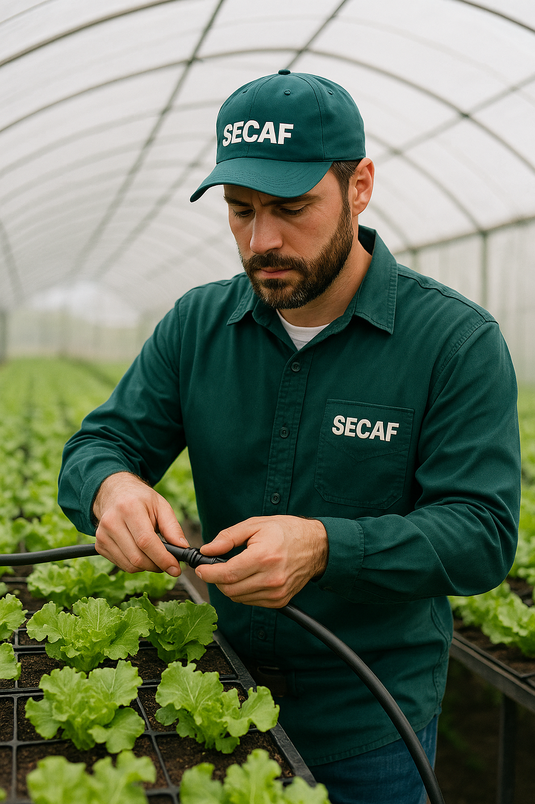

Sistemas de Irrigação
A irrigação é uma técnica fundamental para garantir a produtividade agrícola, principalmente em regiões de clima seco ou em períodos de estiagem. Conheça os principais tipos de irrigação utilizados no Brasil:
1. Irrigação por Aspersão
Simula a chuva ao lançar água sob pressão no ar. Ideal para pastagens, hortaliças, grãos e culturas de ciclo curto.
- Convencional: Utiliza aspersores móveis ou fixos.
- Pivô Central: Sistema mecanizado circular, eficiente e muito usado em grandes áreas.
- Cânions ou Carretéis: Dispositivos móveis com alta pressão, indicados para lavouras extensas.
2. Irrigação Localizada
Aplicação de água diretamente na raiz da planta, com economia de água e maior eficiência.
- Gotejamento: Libera gotas na base de cada planta. Ideal para hortas, fruticultura e áreas com escassez hídrica.
- Microaspersão: Jatos de baixa pressão cobrindo pequenas áreas. Excelente para viveiros, estufas e canteiros.
3. Irrigação por Superfície
Distribuição de água pela gravidade em sulcos ou lâminas sobre o solo.
- Sulcos: Canaletas por onde a água escorre entre as linhas de cultivo.
- Inundação: Utilizada principalmente em arroz irrigado, cobrindo toda a superfície.
4. Irrigação Subterrânea
Instalação de tubos gotejadores abaixo da superfície. Reduz perdas por evaporação e evita umidade excessiva na superfície.
5. Irrigação Automática com Sensores
Utiliza tecnologia com sensores de umidade, clima e programação. Reduz desperdício e aumenta a eficiência.
Escolha do Sistema Ideal
A escolha depende de fatores como tipo de solo, cultura, disponibilidade hídrica, topografia e investimento disponível.
Consultoria Técnica
A SECAF oferece projetos personalizados de irrigação, levando em consideração a viabilidade econômica, técnica e ambiental de cada propriedade. Entre em contato conosco para agendar uma visita técnica.